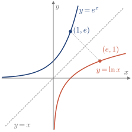
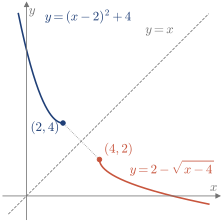
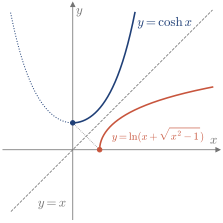
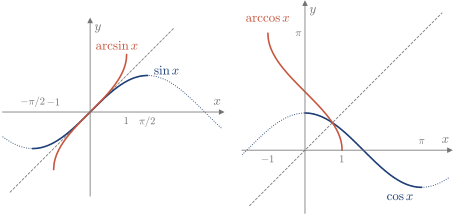

3.2 Función inversa
No todas las funciones se pueden deshacer: para volver de y a x, cada y tiene que venir de un solo x.
Función inyectiva e inversa
Definición 3.3
Una función f es inyectiva en D si, para x_1,x_2\in D, f(x_1)=f(x_2) implica x_1=x_2.
Por ejemplo, f(x)=x^2 no es inyectiva en \mathbb{R}, porque f(-1)=f(1), pero sí lo es en [0,\infty).
Definición 3.4
Sea f inyectiva, con dominio D y rango R. Su función inversa f^{-1}, con dominio R y rango D, cumple f\left(f^{-1}(x)\right)=x\ \ (x\in R), \qquad f^{-1}\left(f(x)\right)=x\ \ (x\in D).
Para calcularla se despeja x en y=f(x) y se cambian los nombres de las variables. Ese cambio de nombres intercambia los ejes: si (a,b) está en la gráfica de f, (b,a) está en la de f^{-1}.
Recuerda
y=f(x)\iff x=f^{-1}(y). Las gráficas de f y f^{-1} son simétricas respecto de la recta y=x.
Ejemplo 3.6
Hallar la inversa de f(x)=e^x.
Con D=\mathbb{R} y R=(0,\infty), de y=e^x se despeja x=\ln y. Cambiando los nombres, f^{-1}(x)=\ln x, con dominio (0,\infty) y rango \mathbb{R} (Figura 3.3).

Figura 3.3. e^x y \ln x, simétricas respecto de y=x.
Ejemplo 3.7
Dibujar f(x)=5+(x-1)(x-3), con D=(-\infty,2], y hallar su inversa. (2013/14 5E)
Completando el cuadrado, y=(x-2)^2+4, una rama de parábola con R=[4,\infty) (Figura 3.4). Al despejar, x-2=\pm\sqrt{y-4}. Como x\le2, se toma el signo negativo: x=2-\sqrt{y-4} \quad\Longrightarrow\quad f^{-1}(x)=2-\sqrt{x-4}, \qquad x\ge4.

Figura 3.4. La rama de parábola y su inversa.
Comprobación. f(1)=5 y f^{-1}(5)=2-1=1.
Ejemplo 3.8
Dibujar f(x)=\cosh x=\dfrac{e^x+e^{-x}}{2}, hallar un dominio en el que tenga inversa, calcularla y dibujarla. (2015/16 5E)
Como f(-x)=f(x), no es inyectiva en \mathbb{R}. Se toma D=[0,\infty), con R=[1,\infty) (Figura 3.5). Con u=e^x, y=\frac{u+1/u}{2} \quad\Longrightarrow\quad u^2-2yu+1=0 \quad\Longrightarrow\quad u=y\pm\sqrt{y^2-1}. Como x\ge0 exige u\ge1, se toma el signo positivo. Entonces x=\ln u y f^{-1}(x)=\ln\left(x+\sqrt{x^2-1}\right), \qquad x\ge1.

Figura 3.5. \cosh x en [0,\infty) y su inversa. En punteado, la rama descartada.
Comprobación. f(0)=1 y f^{-1}(1)=\ln1=0.
Funciones trigonométricas inversas
El seno, el coseno y la tangente son periódicos, así que no son inyectivos en \mathbb{R}. Sus inversas se definen en un intervalo donde sí lo son, que recorre todos sus valores (Figura 3.6).

Figura 3.6. Seno y coseno en sus intervalos restringidos, con sus inversas. En discontinuo, y=x.
Recuerda
\arcsin:[-1,1]\to\left[-\frac\pi2,\frac\pi2\right], \qquad \arccos:[-1,1]\to[0,\pi], \qquad \arctan:\mathbb{R}\to\left(-\frac\pi2,\frac\pi2\right).
Ejemplo 3.9
Hallar el dominio y el rango de f(x)=\dfrac{3\pi}{2}+3\arcsin(2x).
El arcoseno exige -1\le2x\le1, así que D=\left[-\frac12,\frac12\right]. Como \arcsin(2x) toma todos los valores de \left[-\frac\pi2,\frac\pi2\right], al multiplicar por 3 y sumar \frac{3\pi}2 queda R=[0,3\pi].
Con los contenidos de esta sección puedes hacer los ejercicios 3.4–3.7.